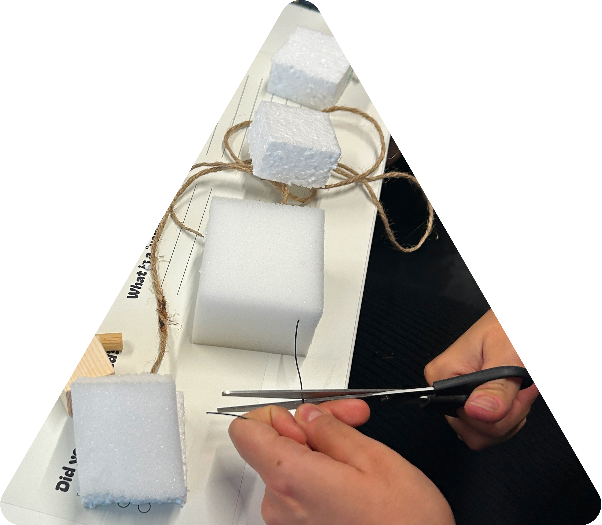

Are you a women and suffer from urinary tract infections (UTIs)? Have you ever experienced urinary tract infections, such as cystitis, or are you chronically affected by this sort of diseases? Did you have any troubles with the treatment? Was the antibiotic not effective or did it cause side effects?
Take part in the workshop
Shape your symptoms

Share your experience and take part in the research to identify relevant information to improve the diagnosis of urinary tract infection in women.

“Shape your symptoms” is a 3-hour workshop organised to have people with experience of UTIs working together with healthcare experts to define information and communication modalities in order to best understand the disease and provide information to improve the treatment. During the workshop participants are invited to share their experience and discuss their symptoms supported by different materials.

No skills are required. The workshop is free of charge and will be held in English. This project is part of a PhD research in Design. The College of Engineering, Design and Physical Sciences Research Ethics Committee has approved this study. The purpose of the research is to define a method to involve people with experience of the disease and experts in improving UTI diagnosis and antibiotic prescription in order to tackle the problem of resistance development. The activity is meant to promote data literacy skills and abilities to support patients’ symptom explanations during consultation.
Workshop dates and locations
2 May 2024 - Brunel University London (UK)
24 May 2024 - SUPSI, Mendrisio (CH)